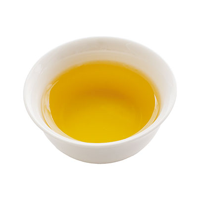
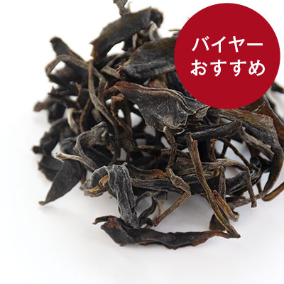

사시마 홍차 이즈미 2026
猿島紅茶 いずみ 2026


「物語」のある和紅茶 ・ 希少品種「いずみ」を味わう。
野花のブーケのような甘い香りと優しい余韻。淡く黄金に輝く水色も美しい、希少品種「いずみ」の春摘み和紅茶。
【品種について】
「いずみ」は昭和8年（1933年）に日本茶の輸出促進の目的で開発、育成された品種で、「べにほまれ」の自然実生からの選抜です。
第二次世界大戦により茶の研究開発はいったん中断したものの、戦後に再開されると釜炒り茶に向くと評価され、1960年に品種登録、「いずみ」と命名されました。
主に北アフリカ向けに出荷されていた釜炒り茶でしたが、戦後日本の経済発展の反面、輸出需要は落ち込んでいき、「いずみ」は品種登録されたもののほとんど栽培されることがなく、半ば忘れられた品種となっていました。
「いずみ」には日本茶の品種には珍しい甘い香りがあり、その香りに魅了された吉田茶園・吉田正浩氏が自身の茶園で苗木を栽培し、10年の歳月をかけて復活させました。
親品種である「べにほまれ」が紅茶品種であることから、「いずみ」もまた紅茶に向くのではないかと考え、数々の製茶技術の見直しを繰り返しながら、「いずみ」の魅力を存分に発揮した薫り高い紅茶を誕生させました。
【猿島（さしま）について】
茨城・猿島地域は、関東地方のほぼ中央、茨城県古河市・坂東市・常総市の3市と八千代町・境町の2町からなるお茶の産地です。
利根川流域の肥沃な大地と、寒暖差のある厳しい気候条件により育まれた猿島のお茶は、濃厚な味と香りが特徴で、江戸時代には、関東地方から信濃（長野県）までの広範囲で銘茶として親しまれていた歴史的産地です。
猿島茶は横浜港開港後、日本で初めてアメリカに輸出されたお茶としても知られています。
【吉田茶園について】
吉田茶園は、創業1839年、茨城県古河市で180年以上続く老舗茶園。
園主・吉田正浩氏は6代目に当たります。
「ほくめい」や「はるみどり」、「いずみ」など複数品種を栽培、肥料や農薬をできるだけ使用せず、自然と健康に配慮した茶の栽培と、高品質なお茶作りを行っています。
中国・鳳凰単叢やインド・ダージリンの製法を取り込んだ吉田茶園独自の製法で、香り高く華やかな紅茶を作ることで知られ、特に「いずみ」の和紅茶は、国内外の様々なコンテストで高く評価され、多くの賞を受賞しています。
- 상품번호
- 3424
- 상품 형태
- 20g 봉입
- 가격
- 2,100円
- 판매 안내
- ※기간・수량한정
※상미기한：제조일로부터2년 - 원재료
- 紅茶※商品の改定などにより、商品パッケージの記載内容が上記内容と一部異なる場合がございます。
- 원산지
- 日本・茨城※商品の改定などにより、商品パッケージの記載内容が上記内容と一部異なる場合がございます。
- 찻잎
- 2.5-3g
- 물
- 熱湯
- 우림 시간
- 2-3分
- 우림 횟수
- 1-2回